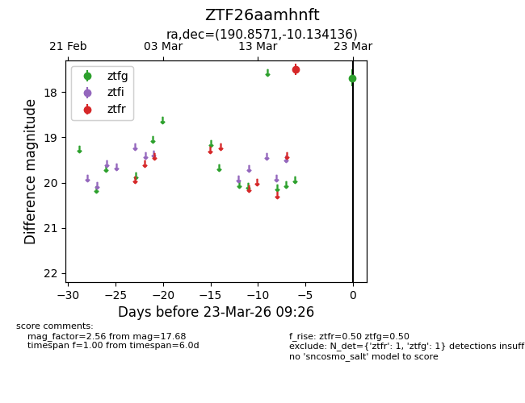
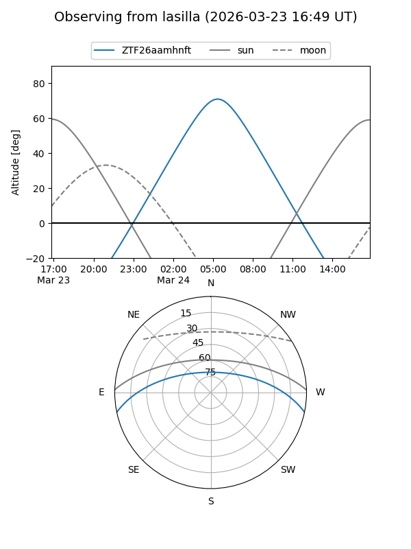
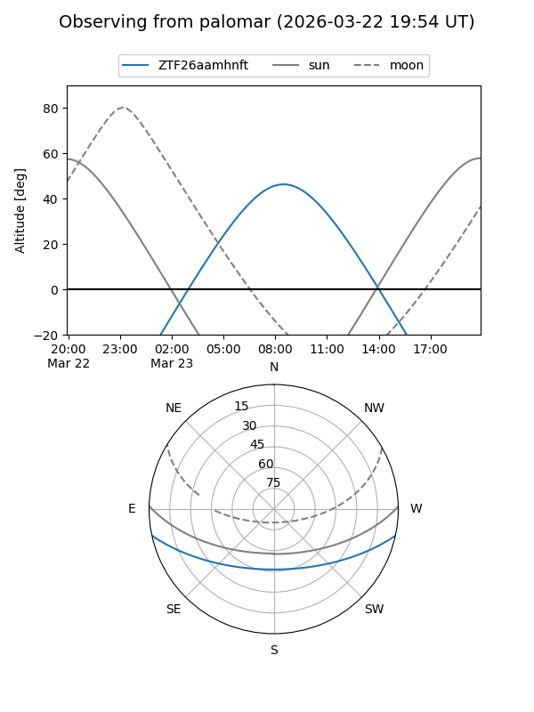
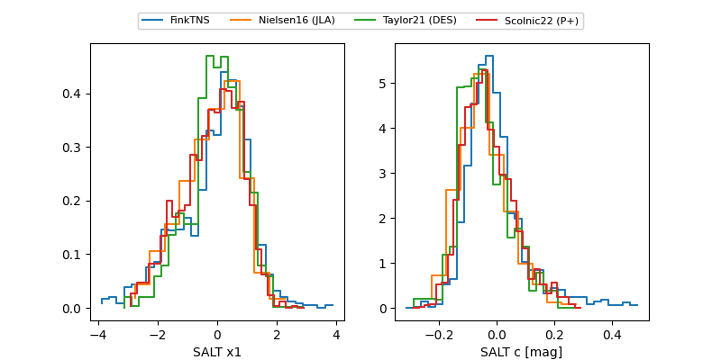

ZTF26aamhnft
Target ZTF26aamhnft at 2026-03-23 09:28
Aliases and brokers:
FINK: link
Lasair: link
ALeRCE: link
alt names
ZTF26aamhnft (ztf,fink_ztf)
Coordinates:
equatorial (ra, dec) = 190.8571,-10.13414
equatorial (HMS+DMS) = 12:43:25.70,-10:08:02.89
galactic (l, b) = (299.6790,+52.68702)
Flags:
Photometry:
last ztfg=17.68, ztfr=17.50
1 ztfg, 1 ztfr detections
Lightcurve

Visibility


Additional plots
